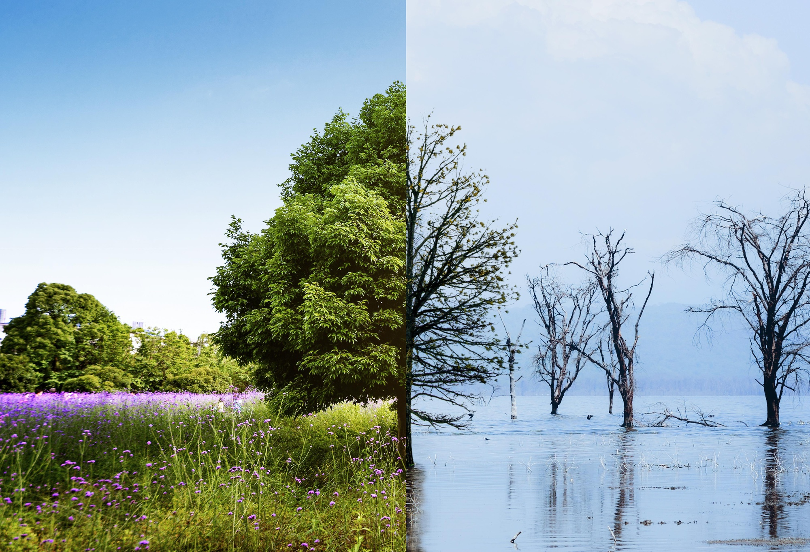

Taavi, tell us a bit about your background — how did your connection to nature begin?

I grew up in a small village on the edge of Soomaa National Park. My earliest memories are of walking barefoot through moss-covered trails and listening to cranes echoing across the bogs. Nature wasn't just something outside — it was home. That connection stayed with me and shaped my career in conservation and eco-tourism.
What makes the forests surrounding Wildwood Resort so unique from a biodiversity perspective?
These forests are part of one of the most untouched ecosystems in Northern Europe. They're a mosaic of old-growth pine, birch, and spruce, home to lynx, elk, and over 150 species of birds. What's rare here is the silence — that kind of deep, undisturbed natural rhythm that you can't fake.
Are there any rare species guests might be lucky enough to spot during their stay?
Absolutely. If you're quiet and lucky, you might see a black stork or a hazel grouse — both quite rare. In spring and autumn, birdwatchers have a field day spotting migratory species. Occasionally, we even catch camera-trap footage of wolves or brown bears far out in the distance.
How does each season change the wildlife experience at Wildwood?
Every season brings a new soundtrack. In spring, it's the frog choirs and nesting birds. Summer is buzzing with insect life and long, amber evenings. Autumn paints everything in fire-orange, and winter brings a stillness — but fresh tracks in the snow remind you you're not alone. It's like watching the forest breathe.
What kind of birds can be observed right from the resort's terrace?
From the comfort of your morning coffee spot, you might see bullfinches, woodpeckers, or the occasional goshawk circling above. There's also a resident pair of tawny owls that like to perch nearby at dusk. With a bit of patience, binoculars, and a warm blanket, the terrace becomes a front-row seat to a nature show.
What are some of the quietest and most peaceful spots nearby for animal watching?
There's a little wetland clearing about 15 minutes into the south trail that's perfect at sunrise. I often go there to spot roe deer grazing or to listen for the elusive pygmy owl. The raised bog boardwalk is another favorite — at dawn, the mist rolls in and it's almost surreal.
Why is Estonia considered a hidden gem for eco-tourism and nature travel?
We have more forest than people — quite literally. That means space, quiet, and raw, untouched nature. Our protected areas are well-managed and free to access, and Estonians still carry a deep respect for the land. It's one of the few places in Europe where true wilderness still feels real.
Can you describe a typical guided nature walk experience at Wildwood?

We start slow — nature rewards patience. I guide guests through trails that awaken all senses: pine needles underfoot, the scent of juniper, birdsong everywhere. We stop to taste wild herbs, spot animal tracks, and even learn ancient foraging techniques. It's not just about sightseeing — it's about feeling grounded.
How do you prepare guests for responsible wildlife interaction?
I always say: "Leave no trace, take only memories." We keep groups small, use low-volume routes, and educate guests on how to move silently, keep respectful distance, and avoid disturbing habitats. Even a single careless step off the trail can disrupt delicate nesting grounds. Awareness is key.
What's one wildlife encounter you'll never forget?
Once, during an early autumn dusk walk, a group of guests and I came across a mother elk and her calf drinking by a forest pond. We froze in place — not out of fear, but awe. They looked at us, acknowledged our presence, and then simply continued. Moments like that remind me why I do what I do.
How does Wildwood Resort protect the surrounding ecosystem while operating a hospitality business?
It's all about balance. Wildwood was built with minimal impact construction — solar panels, geothermal heating, and greywater recycling. Trails are carefully routed to avoid sensitive zones. Even kitchen waste is composted. We also work closely with local conservation bodies to monitor wildlife and adjust practices if needed. It's not just eco-marketing — it's real stewardship.
What are some sustainable habits guests can adopt during their stay?

Simple things go a long way: refill your water bottle, use the compost bins, stay on marked trails, and turn off lights when you leave the room. We also encourage guests to try meat-free meals at least once — our local chefs do wonders with plant-based ingredients. Sustainability doesn't mean sacrifice — it's about being more mindful.
What kinds of activities are available for families and kids who want to learn about nature?
We run nature scavenger hunts, animal tracking workshops, and even "build-your-own-bug-hotel" sessions. Kids love the night walks — seeing glowing mushrooms or hearing owls in the distance is a real thrill. Our goal is to make learning about nature fun and memorable.
Can visitors help with conservation or citizen science projects during their stay?
Yes! We have several ongoing projects — from camera trap image sorting to frog population monitoring and even reporting migratory bird sightings. Guests can join in, and we make it easy and educational. It's a way to contribute meaningfully while connecting more deeply with the forest.
Finally, what would you say to someone considering a stay at Wildwood Resort?

Come not just to escape, but to return — to yourself, to something ancient and peaceful. The forest welcomes those who come with curiosity and respect. You don't need to be an expert in nature — just someone willing to slow down and listen.